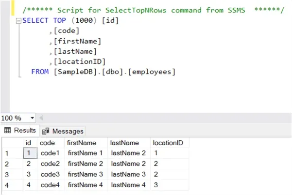

User Data Query
This is where the websocket tech will be used for a database query tool that can be configured to put new statistics on the dashboard

This is where the websocket tech will be used for a database query tool that can be configured to put new statistics on the dashboard
